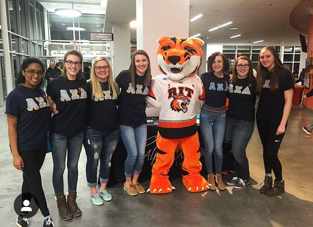
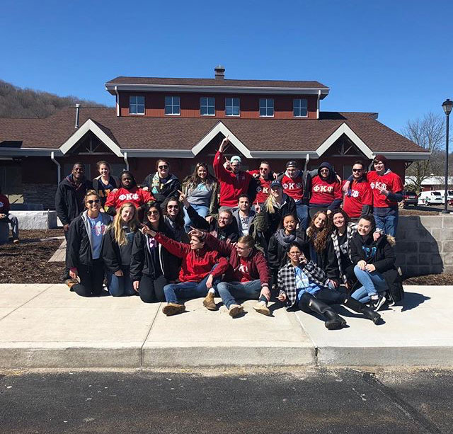
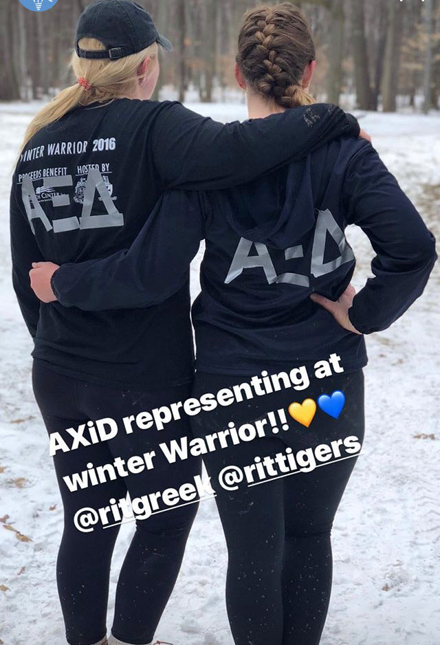

Many of our sisters attend hockey games and other RIT
events! At hockey games we hand out Autism Speaks pins
and advertise our events. Other activities our sisters are involved
in include, Panhellenic Council, Greek Council, Club Field Hockey,
Horseback Riding Club, Study Abroad Program, Ultimate Frisbee, RIT Pep Band,
Women's Volleyball Club

Pictured to the right is our chapter and other organizations
after we finished volunteering at Lollipop Farms which is a local animal
shelter in Rochester. This is just one of many local businesses that we
volunteer with.
In addition to volunteering, Alpha Xi Delta's first priority is
academics. Our chapter in particular is extremely passionate about doing
well in school since after all this is the reason we are here. To exemplify
how much we strive to achieve here at RIT there are quite a few of our sisters
involved in academic fraternities such as the business fraternity and the chemistry
fraternity here on campus. Our chapter has a higher average GPA than the student
body average here at RIT, and for multiple years we have achieved highest average
GPA of all greek life organization. This wasn't an easy achievement as all of the
organizations strive to do their best and hold very high GPAs on campus.

Supporting other organizations's events and philanthropies
is extremely important to our chapter and RIT's greek life. Pictured
to the left is two of our sisters supporting Sigma Chi and Phi Kappa Psi's
annual Winter Warrior event. The event is a outdoors obstacle course that
many two person team competing against each other that raises money for
the Veterans Outreach Center of Greater Rochester. As RIT's greek life community
is fairly small compared to other college campus's it is essential that we
come together as a community and support every organizations events. Other
event that we participate in are Zeta Tau Alpha and Phi Kappa Psi's mudtug
event that is held every fall to support the Hillside Family of Agencies
in Rochester and the MLD Foundation. As well as Sigma Chi's week long Derby Days
fundraiser competition for Huntsmans Cancer Foundation.